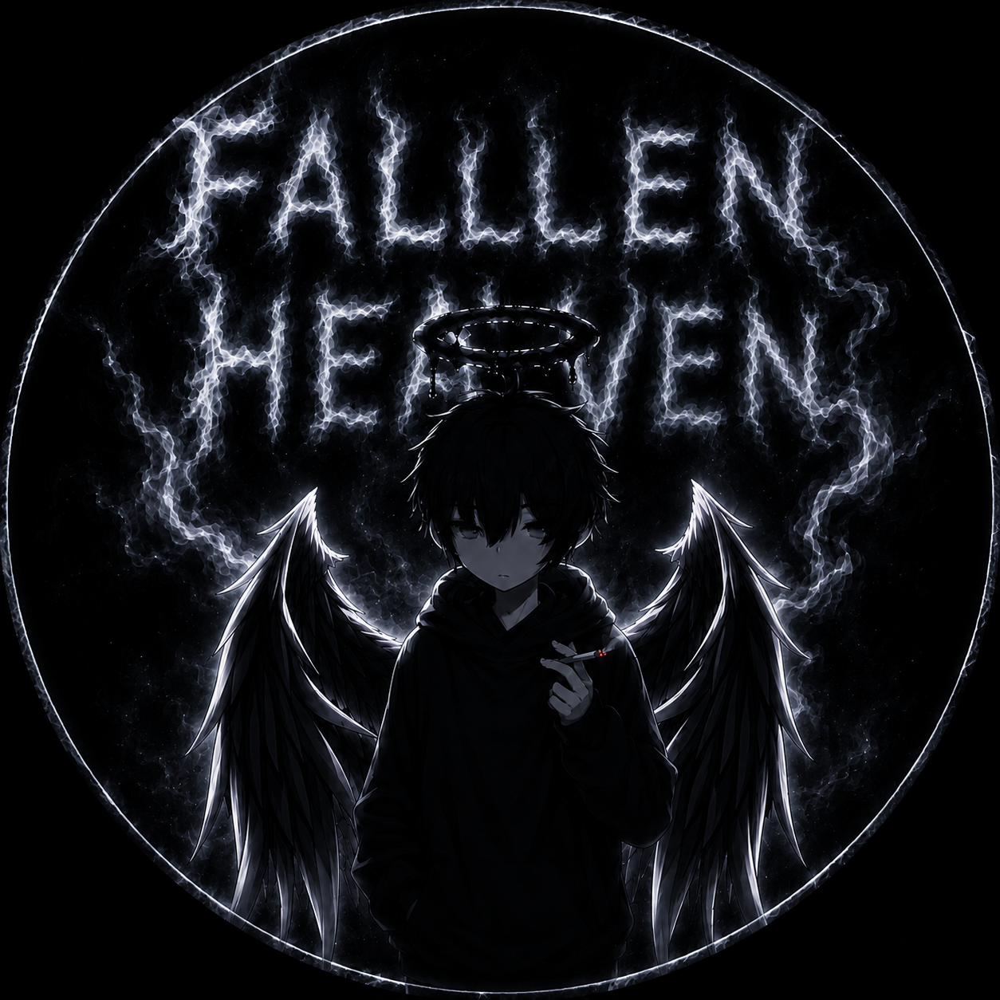

Bot offline

Nicht verbundenVersionFALLEN HEAVEN / CONTROL CENTER
Command Deck.
Starte den Bot, kontrolliere Module, erstelle Content und behalte dein System im Blick.
DISCORD BOTWird geprüft
Wähle deinen Arbeitsbereich.
0 Server verfügbar
Kein Server
BOT SERVICE
KONTROLLEDein Bot ist im Einsatz.
Status wird geladen.
BEREICHE
Direkt öffnen
LIVE ACTIVITY
App-Timeline
SERVER CONTROL
Serververwaltung.
Struktur, Menschen, Events und Inhalte direkt aus Discord. Nachrichten werden nur auf Anforderung geladen und nicht zusätzlich gespeichert.
Noch nicht geladen
EVENTS
Geplante Server-Events
Events werden geladen ...
STRUKTUR
Kanäle, Rollen & Inhalte
Kanalstruktur
Rollenverwaltung
MITGLIEDER
User Intelligence Center
Öffentliche Serverprofile mit belegten Interessen, Aktivität und sicheren Rollen- und Moderationsaktionen.
MitgliedStatusBeigetretenRollen
Mitglieder werden geladen ...
SERVER BOOSTS
Support & Server-Tier
Ein einmaliger Stand aus Discord bildet die Basis. Danach verarbeitet der Bot neue Boost-Ereignisse automatisch und kontrolliert die Rollen weiterhin alle 15 Minuten.
EINMALIGER ERSTABGLEICH
Discord-Aktivitätsliste als Basis übernehmen
Frühere Mitglieder, die nicht mehr auf dem Server sind, werden automatisch ignoriert. Die App prüft eine eingefügte Liste selbstständig. Eine Gesamtdifferenz bleibt anschließend deutlich markiert, bis beide Discord-Summen übereinstimmen. Alte Nachrichten werden danach nicht erneut eingelesen.
Noch keine Liste geprüft.
AKTUELLER BASISSTAND
Booster einzeln korrigieren
Alle aktuell von Discord bestätigten Booster stehen hier bereit. Änderungen werden pro Mitglied gespeichert und dessen Staffelrolle sofort synchronisiert.
Aktive Booster
0Booster werden geladen ...
HEAVEN ECONOMY
VIP & Heaven Coins
Kontostände, VIP-Rollen und persönliche Boost-Meilensteine mit nachvollziehbarem Änderungsverlauf.
LOKAL · REVISIONSGESCHÜTZT
VIP-Daten werden geladen ...
Konten
0Konten werden geladen ...
Letzte Transaktionen
AUDITTransaktionen werden geladen ...
SERVER-SICHERHEIT
Tägliche Struktur-Backups
Sichert Servereinstellungen, Kanäle, Rollen, Emojis, Sticker und geplante Events – ausdrücklich ohne Chat-Inhalte.
Bereit
Backups werden geladen ...
Ein Restore ergänzt oder aktualisiert die gewählten Bereiche. Zusätzliche aktuelle Kanäle und Rollen werden niemals blind gelöscht.
Backups werden geladen ...
DISCORD SYSTEMINDEX
Systemereignisse
Ausschließlich native Discord-Systemmeldungen, sauber getrennt von Bot-Logs und normalen Nutzerprofilen.
Systemereignisse werden geladen ...
SERVER-SYSTEME
Module.
Funktionen schnell finden, sicher konfigurieren und mit klarer Statusrückmeldung speichern.
0/0MODULE AKTIV
Melde dich an und wähle einen Server, um ein Modul zu konfigurieren.
CONTENT STUDIO
Embed Studio.
Nachrichten mit Live-Vorschau erstellen, speichern, senden und später bearbeiten.
#previewLIVE-VORSCHAU
AUTOMATISCHE VORLAGEAktivitäts-LigaDu bearbeitest hier direkt die Live-Vorlage des Moduls. Ranglisten, Zeitraum und Navigation setzt der Bot weiterhin automatisch ein.
{server}{period}{status}{completion}{range}{nextEvaluation}{chat1}{chatValue1}{chatMarker1}{chatBlock1}{chat2}{chatValue2}{chatMarker2}{chatBlock2}{chat3}{chatValue3}{chatMarker3}{chatBlock3}{voice1}{voiceValue1}{voiceMarker1}{voiceBlock1}{voice2}{voiceValue2}{voiceMarker2}{voiceBlock2}{voice3}{voiceValue3}{voiceMarker3}{voiceBlock3}BEREICH
→
Ziel & NachrichtWohin der Bot senden soll
Bild außerhalb vom Embed
Kein Bild ausgewähltPNG, JPG, WEBP oder GIF · maximal 25 MB
◆
Embed-InhaltAlle Embeds bleiben in ihrer echten Reihenfolge untereinander
Nachricht0 / 2.000Embed-Zeichen0 / 6.000Embeds1 / 10Felder aktiv0 / 25
＋
Embed-FelderAlle Informationsblöcke des aktiven Embeds – direkt unter der Beschreibung
⚡
Komplettes FunktionssetEin fertiges Bot-System direkt unter dieses Embed hängen
KEIN SETHeaven VIP & CoinsKonto, VIP-Shop, VIP- und Coin-Geschenke, Coin-Kauf, Boost-Fortschritt und Verwaltung als vollständiges Button-Set.
2 BUTTON-REIHENDas Set verwendet dein vorhandenes Heaven-Economy-Modul und dieselben sicheren Konten, Rollen und Transaktionen. Es entstehen keine getrennten Daten.
◎
Rollen-ButtonsFunktionale Emoji-Buttons für Rollen anlegen
0 ButtonsBestehende Server-Emojis werden über ihre Discord-ID exakt wiederverwendet. Bei „Nur eine Rolle“ darf jedes Mitglied aus dieser Nachricht nur eine der Rollen gleichzeitig besitzen.
↳
Neuen Thread erstellenDirekt mit Startnachricht
Der neue Thread wird automatisch als Ziel ausgewählt.
GESPEICHERT
Entwürfe & Nachrichten
aufklappen · einzelne Einträge löschbar
FALLEN HEAVENSkin Studio
Größe
Linksklick direkt auf 3D malenRechtsklick SekundärfarbeAlt Ansicht drehen
SYSTEM & RECOVERY
Stabilität & Datenschutz
Ein zentraler, sicherer Überblick über App, Bot-Prozess, lokale Daten und Diagnose.
Installierte native Desktop-Version
Supervisor, Prozess und Discord-Verbindung
Nur Schutzstatus, niemals geheime Werte
Index, Logs und Backups
Lokale Update-Quelle und Installationsstatus
DATENINVENTAR
Systemzustand wird geprüft …
Lokaler Speicher
Privacy by default: Der Diagnose-Export enthält keine Nachrichteninhalte, Tokens, Passwörter oder Konfigurationswerte. Exportiert werden nur technische Zustände, Größen, Zähler und bereinigte Protokolle.
Bei einer frischen Installation startet der Bot nie von allein – es werden keine Nachrichten oder Embeds gesendet, bevor du ihn eingerichtest und startest. Mit „Erst manuell starten“ bleibt das dauerhaft so.
APP UPDATES
Neue Version installieren
Der Token wird über Windows DPAPI verschlüsselt und nur für dieses Benutzerkonto gespeichert – niemals im Klartext, niemals in der App. Ohne Token sind private Repositories nicht lesbar; der Kanal bleibt dann auf den Ordner zurückgestellt.
Noch kein Update-Kanal konfiguriert.
Sicher: Die Update-Datei wird vor der Installation anhand des SHA-512-Werts aus latest.yml geprüft und in den Temp-Ordner kopiert – der Kanal muss während der Installation nicht mehr erreichbar sein. Die Installation läuft still (silent), die App startet danach neu.
LIVE DIAGNOSE
Bot-Protokoll
Noch keine Protokolle vorhanden.